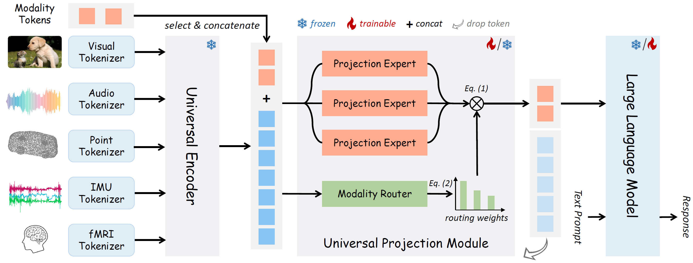
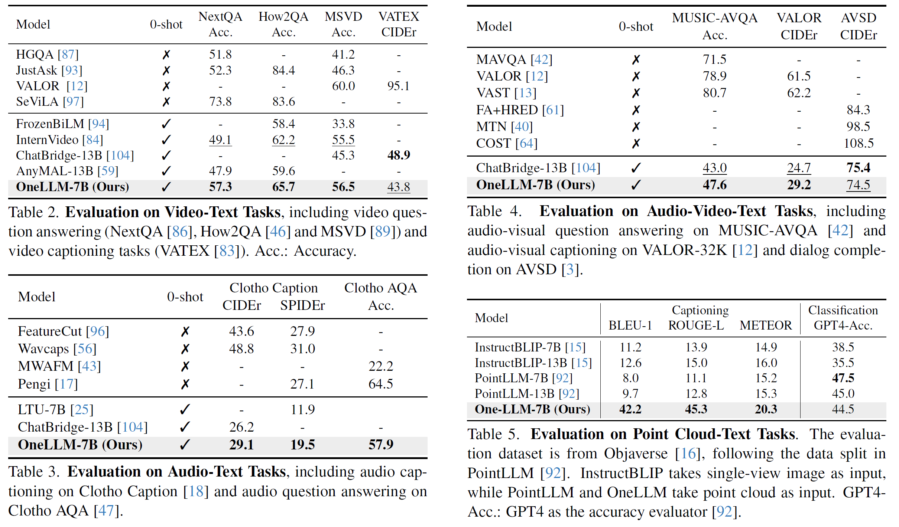
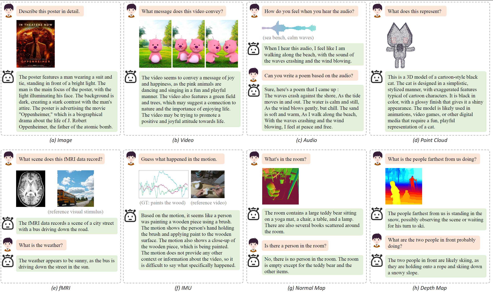

Multimodal large language models (MLLMs) have gained significant attention due to their strong multimodal understanding capability. However, existing works rely heavily on modality-specific encoders, which usually differ in architecture and are limited to common modalities. In this paper, we present OneLLM, an MLLM that aligns eight modalities to language using a unified framework. We achieve this through a unified multimodal encoder and a progressive multimodal alignment pipeline. In detail, we first train an image projection module to connect a vision encoder with LLM. Then, we build a universal projection module (UPM) by mixing multiple image projection modules and dynamic routing. Finally, we progressively align more modalities to LLM with the UPM. To fully leverage the potential of OneLLM in following instructions, we also curated a comprehensive multimodal instruction dataset, including 2M items from image, audio, video, point cloud, depth/normal map, IMU and fMRI brain activity. OneLLM is evaluated on 25 diverse benchmarks, encompassing tasks such as multimodal captioning, question answering and reasoning, where it delivers excellent performance.
The Architecture of OneLLM, which consists of modality tokenizers, a universal encoder, a universal projection module (UPM) and an LLM.
The modality tokenizer is a 2D/1D convolution layer to transform the input signal into a sequence of tokens. For simplicity, we omit video, depth/normal map tokenizers. The universal encoder is a frozen vision-language model (i.e. CLIP) to extract high dimensional features. The UPM is composed of several projection experts and modality routers to align the input signal with language. For the alignment stage, we train modality tokenizers and UPM, and keep LLM frozen. For the instruction tuning stage, we only train the LLM and keep other models frozen. In a forward pass of UPM, we concatenate the input and modality tokens as input. Then we only take the modality tokens as a summary of the input signal and feed it into LLM for multimodal understanding.
Evaluation on 12 Image-Text Benchmarks, including 6 VQA tasks (GQA, VQAv2, OKVQA, TextVQA (TVQA), ScienceQA (SQA) and Vizwiz), 2 image captioning tasks (Nocaps and Flickr30K), and 4 multimodal benchmarks (MME, MM Bench (MMB), MMVet] and SEED). The evaluation metrics for VQA and captioning tasks are accuracy and CIDEr, respectively. The results in bold and underline are the best and second-best results, respectively. -: Not reported result.
Our 7B model is even better than AnyMAL with 70B parameters. For image captioning tasks, OneLLM-7B is on-par with ChatBridge-13B. Although OneLLM is not specifically designed for vision tasks, our results demonstrate that OneLLM can also reach the leading level in vision specialized LLMs, and the gap between MMLLMs and vision LLMs has further narrowed.
At the same time, OneLLM outperforms existing methods in video-text, audio-video-text, audio-text, and point clod-text tasks, highlighting the zero-shot ability in multimodla comprehension.
Please note that all demo inputs are from the web or the testing set of corresponding modalities.
@article{han2023onellm,
title={OneLLM: One Framework to Align All Modalities with Language},
author={ Han, Jiaming and Gong, Kaixiong and Zhang, Yiyuan and Wang, jiaqi and Zhang, Kaipeng and Lin, Dahua and Qiao, Yu and Gao, Peng and Yue, Xiangyu},
year={2023},
eprint={2312.xxxxx},
archivePrefix={arXiv},
primaryClass={cs.CV}
}